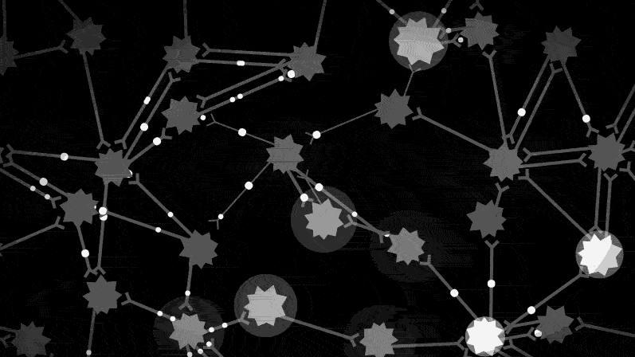
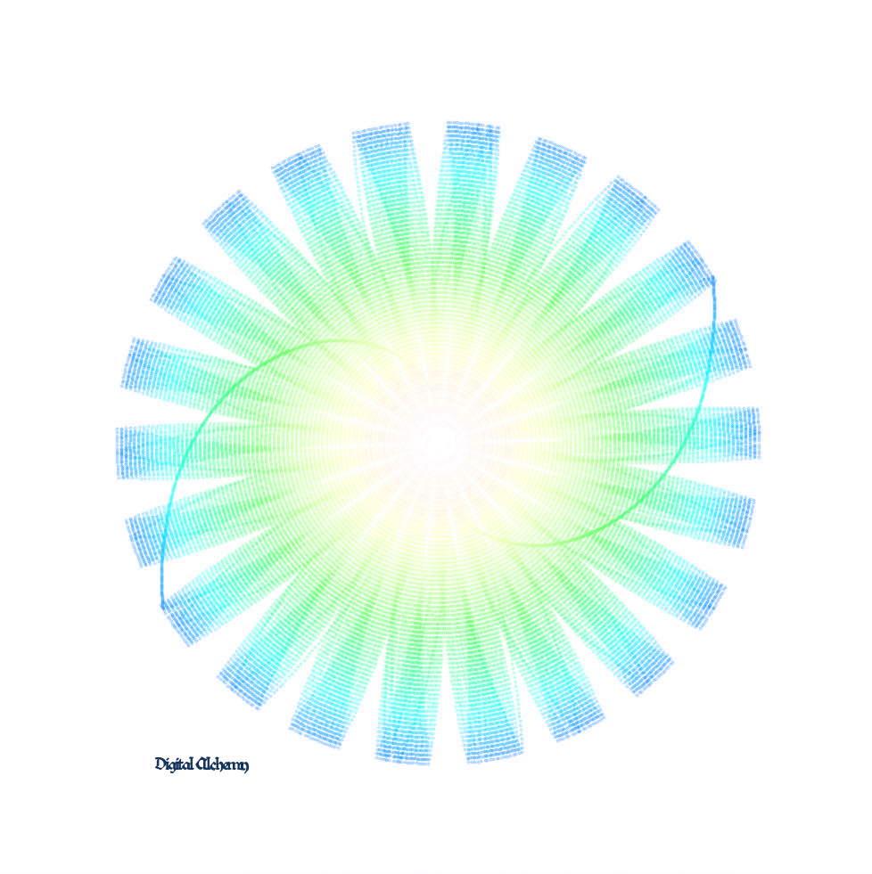

O que é?
O que é?
A palavra chinesa TAO significa, literalmente, " o caminho".
No Taoísmo o caminho do sábio é natural, espontâneo e sem sofrimento.
Qual o objetivo?
Criar Produtos Artísticos e Tecnológicos interessantes e inusitados.
Ofececer Cursos e Oficinas com conhecimento de forma leve e divertida, expandindo a consciência de forma transdisciplinar.
Como fazer?
O Estúdio TAO utiliza do conceito de didática holística estruturada pelas artes, pelas tecnologias e pelos ofícios em interligações.
A ferramenta mais nova de que dispomos para realizar este salto educacional é a “gamificação”, processo que instaura jogos que educam e divertem ao mesmo tempo.
A utilização da Filosofia entra na pergunta básica: porquê?
A utilização das Tecnologias entram fundamentando uma pergunta que surge sempre que se deseja alcançar algum objetivo: como?
A utilização das Artes entram com uma pergunta que deveria ser fundamental a todo ser humano na busca pelo novo; o porquê não?
O aluno é colocado como agente catalisador de todo o conteúdo que lhe será apresentado e o resultado deste caldeirão de referências serve de lastro para que o próprio aluno possa compreender e executar alguma coisa que ele queira, seja um jogo digital, uma instalação interativa, uma arte gráfica, um robô, uma pintura, um desenho, um texto,ou, simplesmente uma ideia.
Proposta Pedagógica: Raciocinando de forma binária, o ser humano precisa se desenvolver em ambos os lados de uma equação com dois elementos em equilíbrio. Estes 2 lados são o ideal e o material, ou, se preferir, o conceitual e o sensível, ou ainda, o antigo e o novo. De fato, procuramos alicerçar o todo através de conexões entre as partes de forma integrada. Distribuímos o conhecimento com uma base estrutural cognitiva, mas também, moral, emocional e espiritual.
Raciocinando de forma binária, o ser humano precisa se desenvolver em ambos os lados de uma equação com dois elementos em equilíbrio. Estes 2 lados são o ideal e o material, ou, se preferir, o conceitual e o sensível, ou ainda, o antigo e o novo. De fato, procuramos alicerçar o todo através de conexões entre as partes de forma integrada. Distribuímos o conhecimento com uma base estrutural cognitiva, mas também, moral, emocional e espiritual.

Metodologia:
o Estúdio TAO tem um método que foi desenvolvida em pesquisa de Doutorado chamada "Da Alquimia Clássica à Alquimia Digital", indicada ao Prêmio de Melhor Tese em Artes da UFMG, e nacionalmente foi indicada ao Prêmio de Melhor Tese em Artes da CAPES
O Estúdio TAO tem como objetivo oferecer serviços em Criação , em Produção de obras Audio/Visuais e/ou Interativas, e em Educação, abrangendo as Artea Tradicionais e as Tecnológicas
Trabalhamos dos Jogos Analógicos aos Jogos Digitais.
Criamos obras de Arte em Desenho e Pintura Tradicional até a Ilustração Digital e o Desenho Procedural.
Atuamos com Fotografia, Cinema, Animação e Computação Gráfica.
Transitamos na WEB e no Audio Visual Interativo.
- Nosso público é composto de Empresas diversas, de Escolas em busca de modernização, e também, de profissionais do Design, Artistas, Tecnólogos, Programadores, Arquitetos e Músicos.
- Somos um Estúdio/Escola itinerante.
- Nossos Cursos são inéditos e as Oficinas são super divertidas!
- Nossa meta é a Arte, a Tecnologia e os Ofícios trazendo o conhecimento Antigo e o Novo de maneira integrada.
- Criamos nosso próprio Material Didático.
- Metodologia de avaliação e acompanhamento consciente e inclusiva.
- Possuímos um Corpo Docente profissional composto de membros gabaritados do Mercado e de Acadêmicos, Mestres e de Doutores.
- Buscamos uma Gestão simplificada.
- Sofremos Atualizações periódicas
- Os cursos e oficinas do Estúdio TAO oferecem uma formação híbrida Arte/Ciência/Filosofia.
- As dinâmicas do Estúdio TAO são divertidas e promovem conhecimento e espírito de equipe
"Na busca do conhecimento, todos os dias algo é adquirido.
Na busca do Tao, todos os di as algo é deixado para trás."
Tao Te King
Veja o que te inspira na seta de menu, acima à direita.
Quem sou eu?
Dr. Prof. Artes. COUTINHO,MAP.
Idealizador do Estúdio TAO
"Ensinar é fazer o verdadeiro bem com o que se tem de mais valioso e que se recebe do Universo, o conhecimento.
O conhecimento deve se tornar pleno com uma base conceitual em um mundo mental, mas também, sem esquecermos da base material do mundo físico.
Arte e Ciência andam juntas!
O conhecimento é bom e faz bem se é um conhecimento que pode dar origem a um algo a mais, que é criado pelo conhecedor. De outra forma, seria apenas repertório, uma memória sem consciência.
Buscamos uma forma didática integrada e a favor do ser humano.
A busca pelo conhecimento holístico passa pelo caminho inclusivo e agregador, sem viés preconceituoso. Por causa desta visão holística entendemos que é preciso sempre ressaltar os entrecruzamentos e as transferências entre as disciplinas variadas. Estas conexões são viabilizadas pela conversa proporcionada pelas “Artes Liberais”, a dizer: Aritmética, Geometria, Música, Cosmogonia, Gramática, Lógica, Retórica, as tecnologias e os ofícios.
Esperamos sinceramente que todos os seres humanos possam conhecer, de uma forma realmente libertária, sem preconceitos e cheia de bons conceitos!
Mas, o mais importante é divirta-se!"